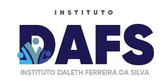

Eventos que aproximam pessoas e fazem a cultura circular.
O Instituto Daleth Ferreira da Silva cria encontros, forma redes e apoia iniciativas que transformam territórios com responsabilidade e afeto.

Nossos trabalhos

BRINCANDO NA COMUNIDADE
Alegria, afeto e integração ocupando as ruas para fortalecer os laços comunitários através do brincar.

ENCONTRO DAS TRADIÇÕES DE BEQUIMÃO
A força da ancestralidade e dos saberes populares mantendo viva a identidade cultural de Bequimão.

ENCONTRO MARANHENSE DE CULTURA DE SÃO MATEUS
O ponto de encontro da diversidade, da arte e da rica produção cultural que move o Maranhão.

RAÍZES EM FESTA DE CODÓ
Celebrando a fé, o ritmo e o orgulho das origens que fazem pulsar a história codoense.
Sobre o Instituto DAFS
O Instituto Daleth Ferreira da Silva é uma organização da sociedade civil sediada em São Luís, Maranhão. Nasce do compromisso de aproximar pessoas, incentivar a participação comunitária e colaborar com iniciativas capazes de gerar pertencimento, oportunidades e transformação social.
Reconhecemos a cultura como força de identidade e desenvolvimento. Por isso, criamos espaços de convivência, expressão, aprendizado e diálogo, conectando comunidades, artistas, lideranças, profissionais e organizações em torno de propósitos comuns.
Mais do que realizar atividades pontuais, buscamos contribuir para processos duradouros: fortalecer vínculos, ampliar o acesso a direitos, valorizar talentos locais e apoiar soluções construídas com responsabilidade e sensibilidade diante das realidades de cada território.
Para Quem Atuamos
Nossos projetos são desenhados para atender diferentes realidades e públicos, fortalecendo pessoas e coletivos em cada território.
📬 Contato
Entre em contato conosco para saber mais sobre nossos projetos, parcerias ou para participar das nossas atividades.